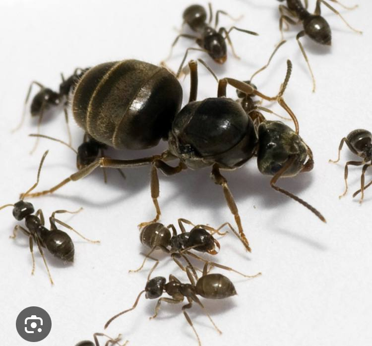

Lasios Niger
Опси:
Цей вид мурах живе у садах, а також його легко можна знайти у містах. Їсть він майже все, окрім насіння. Королева живе до 10 років.
У них нема солдатів, тому треба давати їм менших таргаанів або мучних червʼяків.
нема в наявності
Ціна: 35 грн.
Склад:
1 баночка
Інструкція:
1.Поставте у тінь, напівтінь
2.НЕ відкривайте
3.Залиште гарний відгук
|  |
|---|